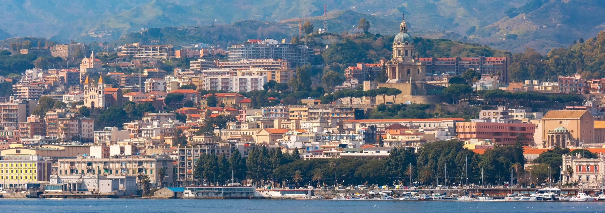

Ragusa


Messina si affaccia sullo Stretto che la separa dalla Calabria, ed è stata quasi interamente ricostruita dopo il catastrofico terremoto del 1908. Nonostante la sua storia tormentata, conserva tesori artistici di rara bellezza e una vivace identità culturale.
Piazza del Duomo è il cuore civile e religioso di Messina, dominata dalla Cattedrale normanna e dal suo straordinario campanile con orologio astronomico. È uno spazio monumentale che testimonia la capacità della città di rinascere dopo ogni distruzione.

Una torre campanaria che ospita l'orologio astronomico e meccanico più grande e complesso del mondo. Ogni giorno a mezzogiorno, i suoi automi dorati in bronzo si animano in uno spettacolare carosello accompagnato dall'Ave Maria.
Piazza Duomo, 98122 Messina ME
Una superba fontana rinascimentale in marmo bianco, scolpita dal discepolo di Michelangelo, Giovanni Angelo Montorsoli. Celebra il fondatore mitologico della città di Messina, unendo eleganza formale e complessa simbologia.
Piazza Duomo, 98122 Messina ME


Un locale classico e accogliente proprio di fronte alla Cattedrale. È il posto giusto per assaggiare il tipico 'mezzo freddo' messinese (caffè freddo con panna) o per gustare la tradizionale pignolata.
Via S. Giacomo, 13, 98122 Messina ME
L'arteria commerciale più importante e vivace di Messina. Un lungo viale alberato, ricostruito dopo il terremoto del 1908, ricco di negozi, boutique e attività, perfetto per lo shopping cittadino.
Viale S. Martino, 98122 Messina ME